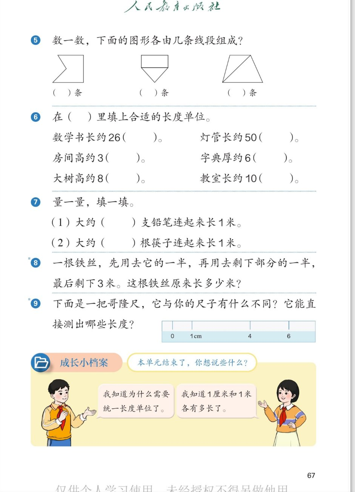

🔊 四、厘米和米 · 课本第 67 页 · 练一练 5~9 与成长小档案
人教版《数学》二年级上册 · 有声图文带读 · 先想后看解析 · 数线段 · 填单位 · 铁丝倒推 · 哥隆尺
题数
9
认知
2
强化
3
拓展
1
本页重点
数图形线段 · 选长度单位 · 倒推问题 · 哥隆尺的奥妙
🎧 分两步学：
① 解析教材图片
——纯声音读图，读到哪一块哪一块闪动提示；关键处先倒计时让你思考，再在图片下方给出解析并朗读。
② 分层提问练习
——六道分层题（认知 / 强化 / 拓展），先思考再展开解析、朗读参考答案；这一步不再回到图片。
也可以随时点任意一句话、图上任意一块单独听；点课本文字卡还会展开答案。
教材图片（点块听读，读到哪块哪块闪）

📖 人教版《数学》二年级上册 · 课本第 67 页 · 图片仅供个人学习，版权归人民教育出版社所有
🤔 想一想（点我可跳过）
课本的文字（点句子：听读 + 看答案）
第 5 题
数图形由几条线段组成
看答案 ▾
图一（凹五边形）：
5 条
；
图二（矩形上、三角下）：顶边 1＋竖边 2＋中间线 1＋斜边 2 =
6 条
；
图三（梯形加对角线）：外框 4＋对角线 1 =
5 条
；
💡 按顺序数，数过的做记号
第 6 题
填合适的长度单位
看答案 ▾
数学书长约 26（
厘米
）；灯管长约 50（
厘米
）；
房间高约 3（
米
）；字典厚约 6（
厘米
）；
大树高约 8（
米
）；教室长约 10（
米
）；
💡 想实物比一比：短的用厘米，长的用米
第 8 题
铁丝原来长多少米
看答案 ▾
倒着想
：最后剩 3 米；
剩下的一半是 3 米 → 用之前是 3×2=
6 米
；
6 米是全长的一半 → 原来是 6×2=
12 米
；
💡 倒推法：从结果一步步往回想
第 9 题
神奇的哥隆尺
看答案 ▾
不同点：刻度只有
0、1、4、6
，间隔
不均匀
；
能直接量：
1
厘米(0→1)、
3
厘米(1→4)、
2
厘米(4→6)、
4
厘米(0→4)、
5
厘米(1→6)、
6
厘米(0→6)；
💡 两点一比，1~6 厘米全能量出
分层提问练习（先想后看解析）
🔺
认知
第 5 题：三个图形各由几条线段组成？
看解析
🤔 想一想
解析：
依次是
5 条、6 条、5 条
；
一段一段指着数，数过的做记号。
📝
认知
第 6 题：六句话各填什么长度单位？
看解析
🤔 想一想
解析：
厘米、厘米、米；
厘米、米、米。想实物比一比再填。
🧵
强化
第 8 题：铁丝原来长多少米？怎么想？
看解析
🤔 想一想
解析：
倒推
：3×2=6，6×2=12，原来长
12 米
；
顺着验一验：12 用一半剩 6，再用一半剩 3，对上了。
💡 从结果往回想，再顺着检查
📐
强化
第 9 题：哥隆尺和你的尺子有什么不同？
看解析
🤔 想一想
解析：
哥隆尺只有
0、1、4、6
四个刻度；
我们的尺子刻度密，每大格都是 1 厘米。
🎯
强化
哥隆尺能直接测出哪些长度？
看解析
🤔 想一想
解析：
1、2、3、4、5、6 厘米
全能直接量
；
两个刻度一对：0→1、4→6、1→4、0→4、1→6、0→6。
💡 刻度少，组合却很神奇
🌈
拓展
成长小档案：本单元结束了，你想说些什么？
看解析
🤔 想一想
解析：
知道为什么要
统一长度单位
；
知道 1 厘米、1 米
各有多长
，会量会画线段。
🌈 把收获写进成长小档案吧
① 解析教材图片
② 分层提问练习
⏹ 停止
纯声音 + 高亮跟随 · 想好才出解析
← 返回导航